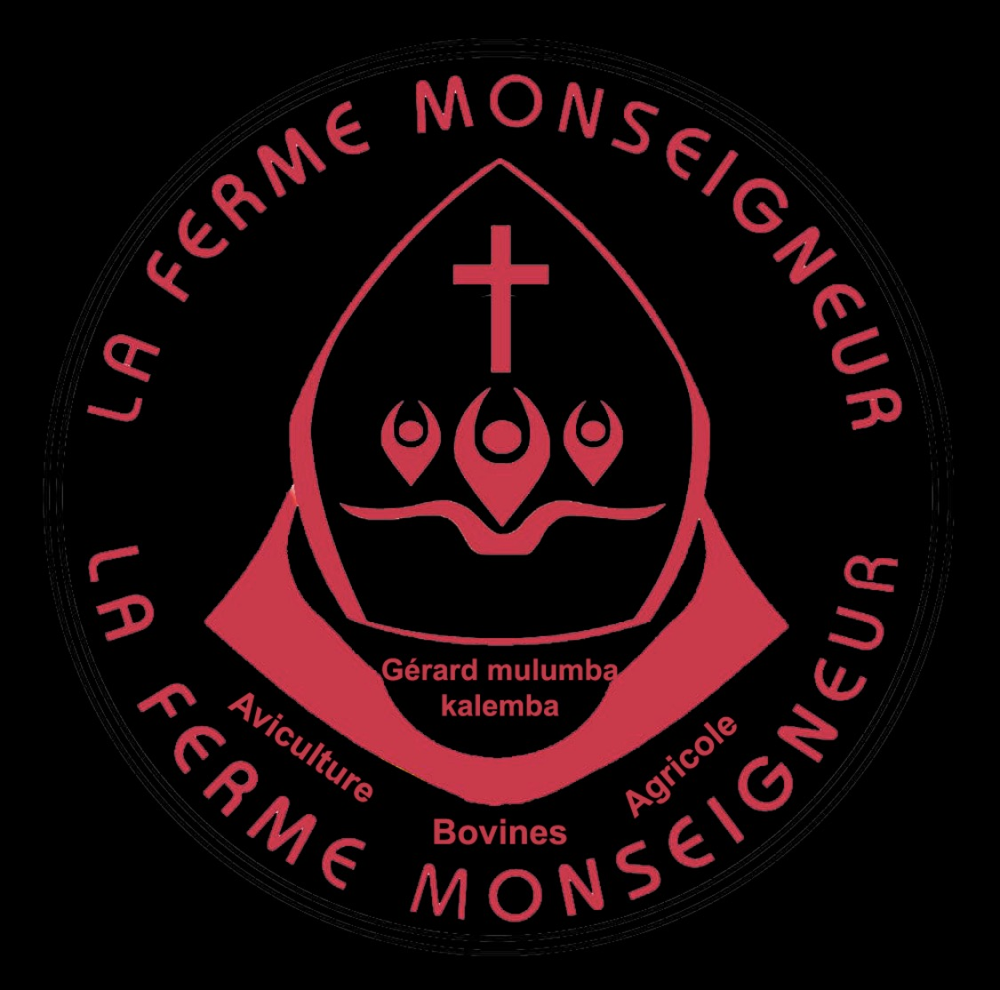
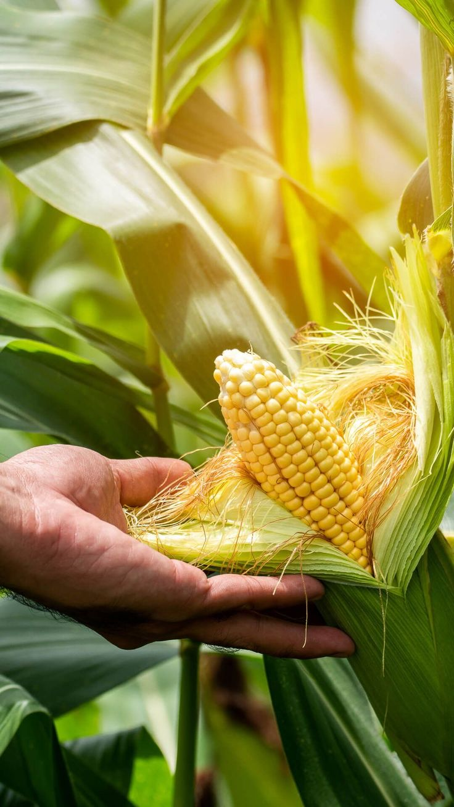
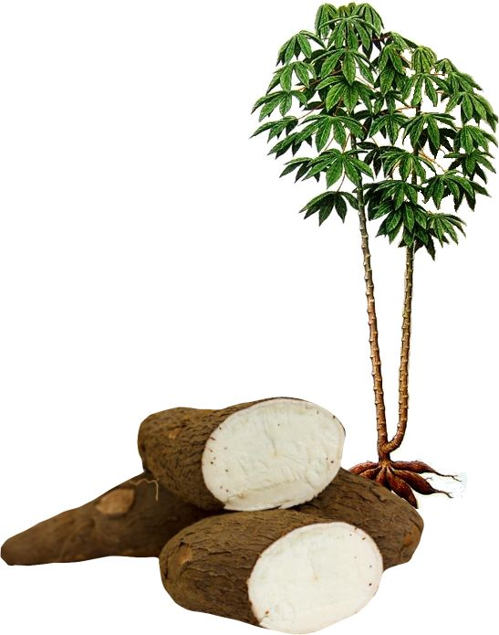
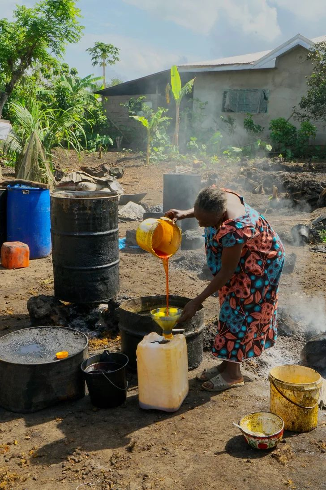
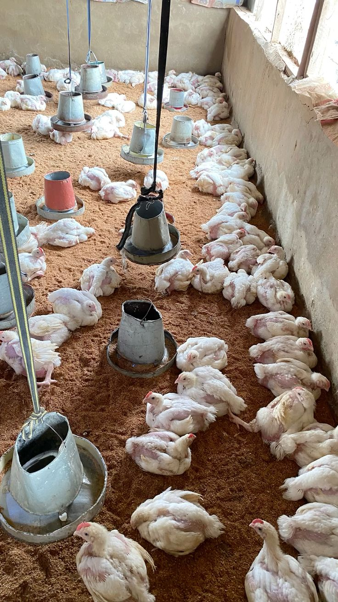
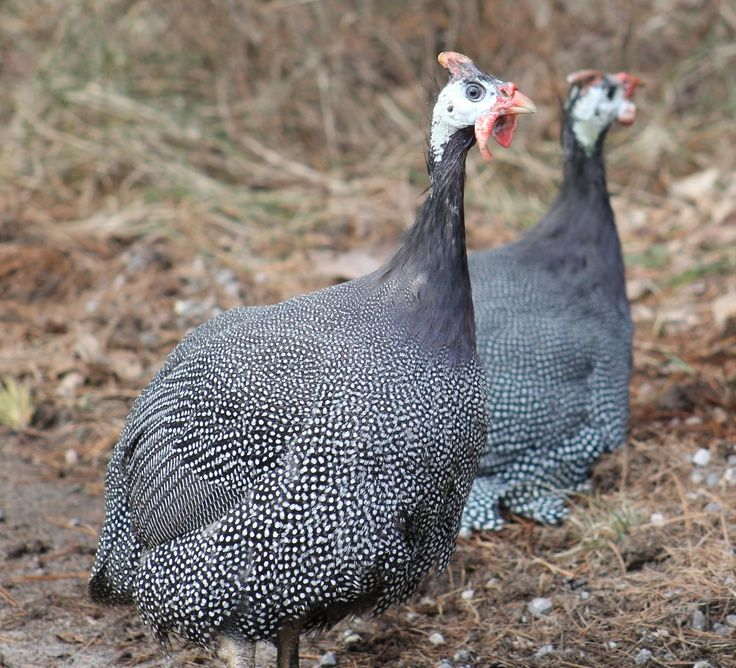

C.C.A.N Ferme MonseigneurFrais, naturels et cultivés avec soin pour nourrir votre famille.

Cultivé sur plusieurs hectares avec des méthodes durables, notre maïs est disponible en épis frais, en grain séché et en farine. Idéal pour l'alimentation des ménages et des animaux.
💬 Commander via WhatsApp
Racines fraîches de qualité, transformables en farine, chikwangue ou pondu. Le manioc de la ferme C.C.A.N est une base essentielle de l'alimentation locale.
💬 Commander via WhatsApp
Extraite de palmiers cultivés localement, notre huile de palme rouge est pure, naturelle et prête à l'emploi pour la cuisine quotidienne et la transformation alimentaire.
💬 Commander via WhatsApp
Nos poules sont élevées dans un environnement sain et spacieux. Elles produisent des œufs frais et nutritifs disponibles régulièrement pour les ménages et revendeurs.
💬 Commander via WhatsApp
La ferme élève des cailles dont les œufs sont reconnus pour leur richesse nutritive. Une production de niche, appréciée pour la qualité et la saveur.
💬 Commander via WhatsAppContactez-nous directement sur WhatsApp pour toute commande ou renseignement.
💬 Commander via WhatsApp